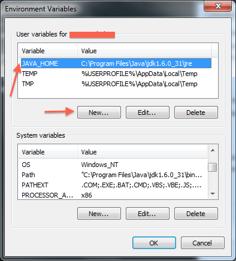
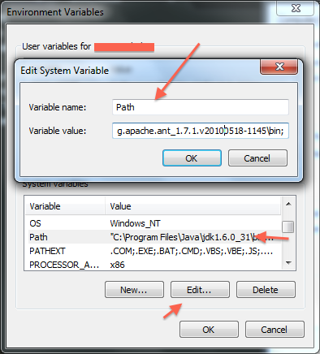

iForce - Sublime text extension to help salesforce development (windows)
Prerequisites:
If you are using Force.com IDE or Eclipse as your primary IDE, chances are you have everything you need.
- JAVA_HOME - Need to create a environment variable JAVA_HOME to point your JRE eg. _C:\Program Files\Java\jdk1.6.0_31\jre
- PATH - Add your Ant.bat location to your environment variable PATH eg. C:\Users\your_username\eclipse\plugins\org.apache.ant_1.7.1.v20100518-1145\bin
- Download Force.com Migration Tool from https://your_org_instance.salesforce.com/ui/setup/sforce/ClientDevToolsSetupPage?setupid=ClientDevTools and replace ant-salesforce.jar you have download to your ant library folder. eg. C:\Users\your_username\eclipse\plugins\org.apache.ant_1.7.1.v20100518-1145\lib
Features
- Setup a new project
- Refresh from server
- Quick compile - Deploy current file to salesforce
- Snippets - Create new Class/Trigger/Page with tab triggers (ifc, ift and ifp)
- Syntax auto-set (*.cls, *.trigger and *.page)
License
Screenshots
Set your environmet variable - JAVA_HOME
Add your ant/bin to - PATH variable
Copyright 2012 Palaniraja
Licensed under the Apache License, Version 2.0 (the "License"); you may not use this file except in compliance with the License. You may obtain a copy of the License at
http://www.apache.org/licenses/LICENSE-2.0
Unless required by applicable law or agreed to in writing, software distributed under the License is distributed on an "AS IS" BASIS, WITHOUT WARRANTIES OR CONDITIONS OF ANY KIND, either express or implied. See the License for the specific language governing permissions and limitations under the License.